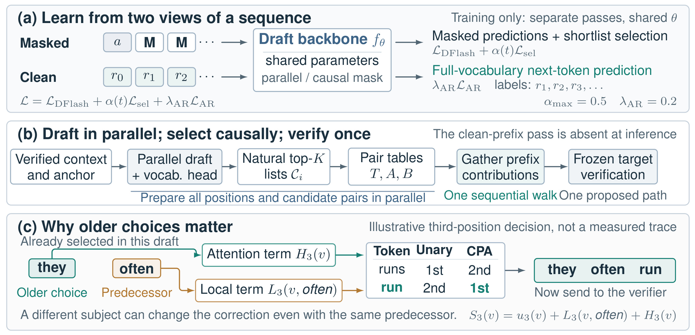
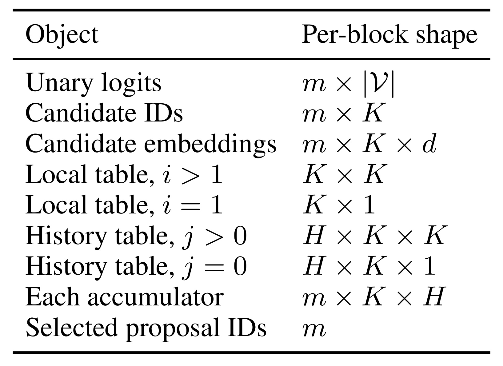
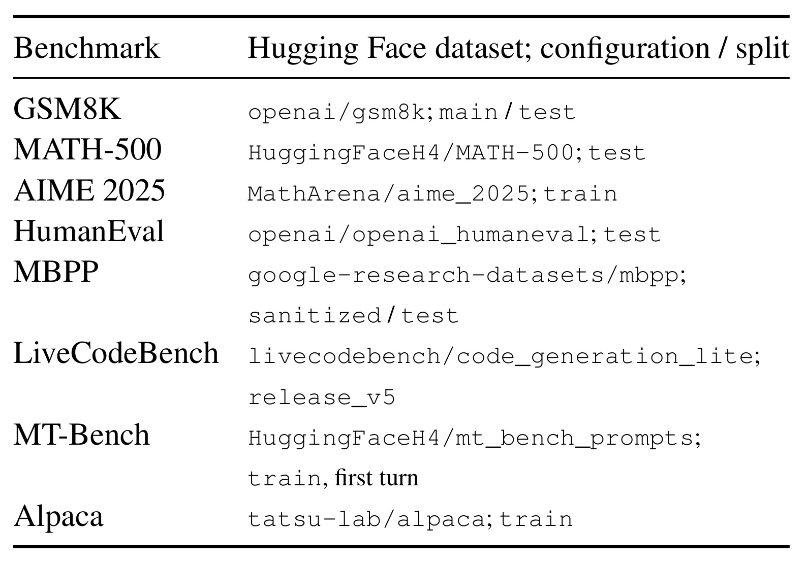
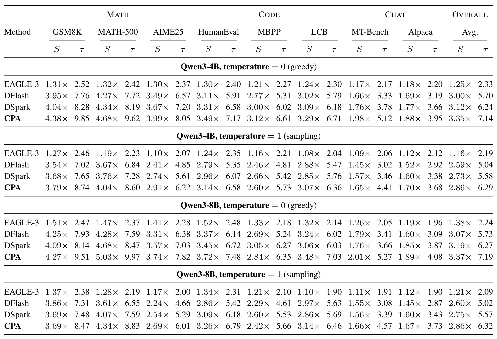
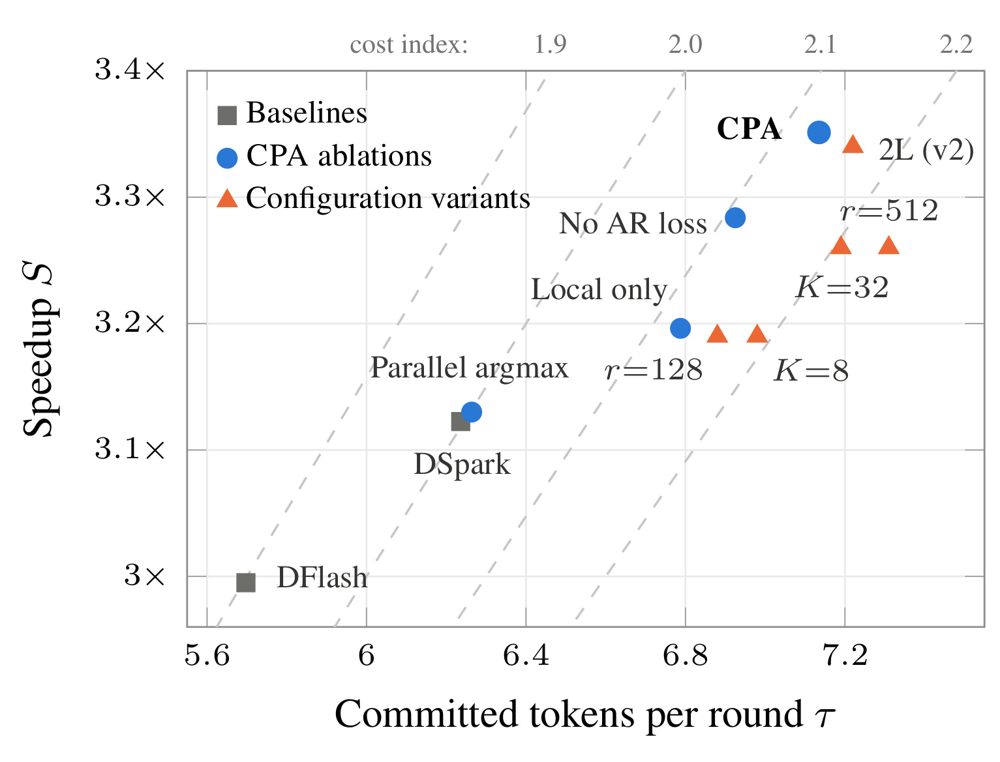
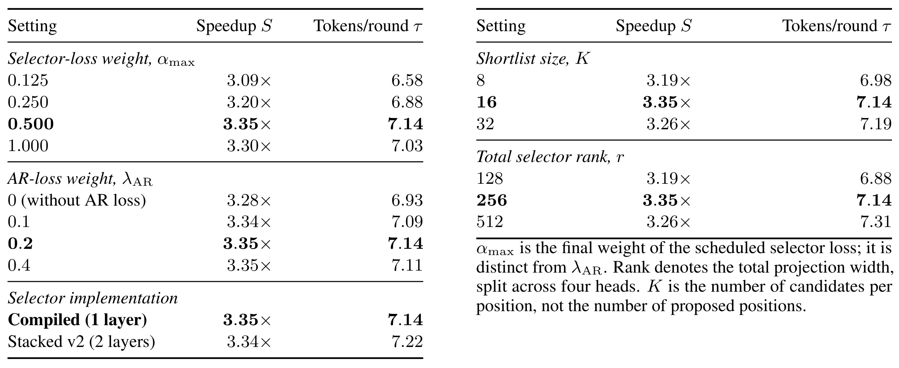
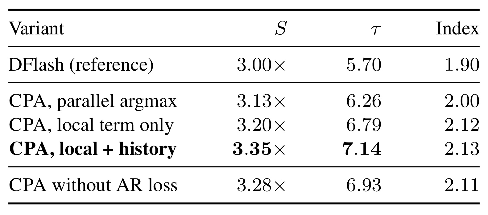
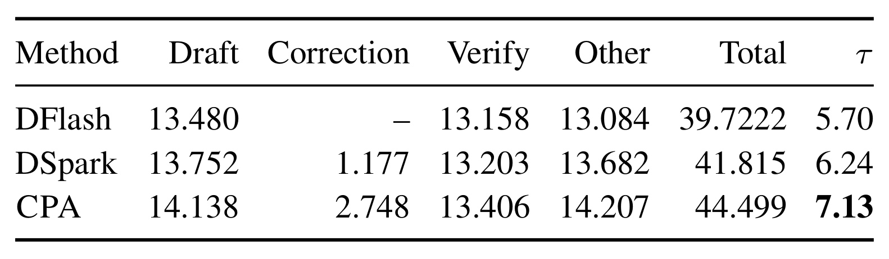
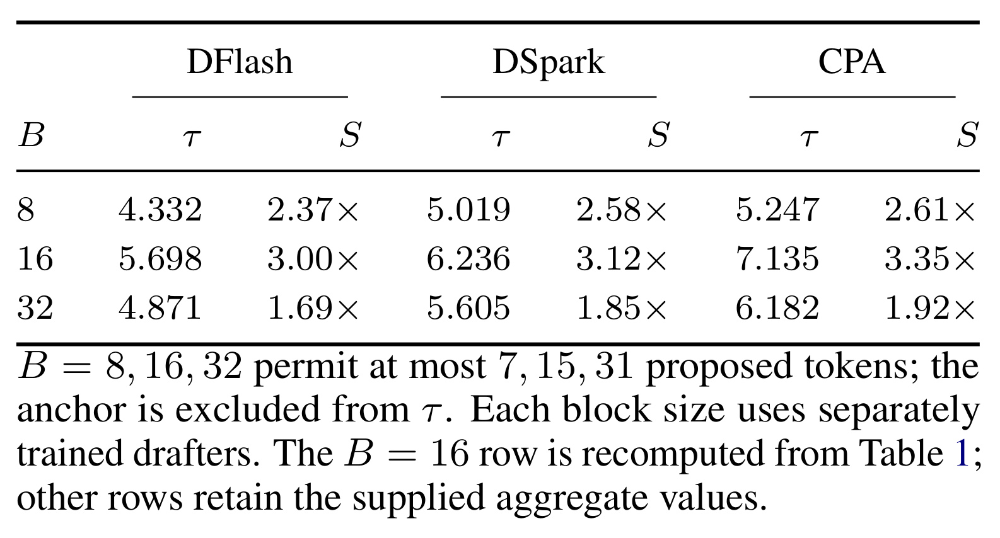
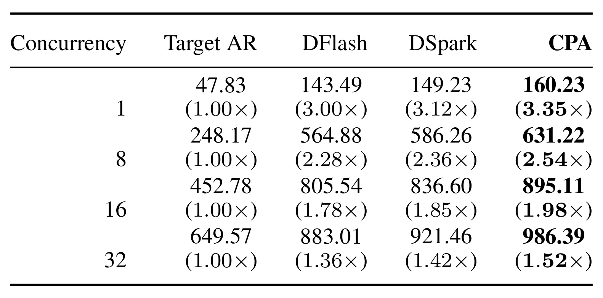

Look Back, Draft Ahead: Corrective Prefix Attention for Parallel Speculative Decoding / 用块内前缀修正并行草稿
Mohammad Mahdi Moradi、Ali Pourranjbar、Zongzuo Wang、Mingming Zhu、Ben Feng 和 Boxing Chen 来自华为 Toronto Research Center 的 Ascend Team。arXiv 初版在北京时间 2026 年 11 月 24 日提交，同日列入公开公告。本轮访问了作者声明的实现仓库，未复跑训练或测速。arXiv:2611.31112 · 作者实现
块并行草稿能快速给出多个位置的预测，目标模型却按连续正确前缀提交。越早出现一次不一致，后续位置的高置信度越难变成可提交的 token。把完整网络前向放回块内每个选择步骤，又会重新引入昂贵的串行依赖。
1. 背景和问题
目标语言模型通常按自回归方式生成。已经验证的上下文接到下一个目标 token 后，模型才有条件计算再后一个位置。投机解码把“提出候选”和“决定真实提交”分开：成本较低的 drafter 先提交一串猜测，目标模型对这批位置运行一次因果计算，然后将可以接受的连续前缀、必要的纠正词或全通过时的奖励词写入输出。即使两个系统使用同一冻结目标，只要草稿候选队列能更早对齐目标，每轮验证摊到每个已提交 token 的成本就可以下降。这里的效率目标是减少昂贵目标调用的次数，同时维持目标选择或采样规则。把生成候选的接受率直接用作回答正确率，会把执行过程和响应质量混在一起。
逐 token 的自回归草稿天然知道前一个已经提出的词。它可以把词形一致、代码变量名和括号状态通过自己的下一步前向带下去。问题在于每次都要跑网络，块的推理串行度随提议长度上升。另一端的并行 drafter 用一个端到端前向预估固定数量的位置，依赖已验证前缀、目标特征和若干 mask 位置。共享骨干可能学到这些位置之间的联合统计，但每个位置直接取一元分数最大候选时，前一个位置究竟选了哪个 token 不会进入下一处选择。相同上下文可能支持若干合理续写体裁，独立的边缘最可能候选会把不同续写里的词拼在一起。只约束词库范围，无法解决块内分支协调的问题。
原文以英语主谓关系说明分支差别。假设目标上下文允许一个复数主语或单数主语，摆在谓语前的副词却相同。只判断当前词与紧邻的副词能否搭配，两个路径对当前的相邻打分一样。已经选出的旧主语能改变词形偏好。这里重要的是“已经选出”。块内处理的未来位置在目标验证前还没有真实 token，选择器能读取的是同一轮已定下来的草稿候选。猜错旧主语时，更一致的后续词也可能沿错误分支继续，最终在首处拒绝被舍弃。因此前缀信息改善的是可提交长度的统计分布，草稿没有对目标输出的决定权。原文示例也是为了展示依赖结构，不能当作测得的语法能力或生产故障率。
一种轻量修正是用相邻候选对做兼容分。固定紧邻候选后，该打分可预先放入查表矩阵，不必每个位置重算整个网络。它的局限是更早的选择只通过最近一个 token 间接影响后面。局部对照中最有价值的负例正是两个序列有相同相邻前驱，却在更早处选了不同词。递归校正头可以传递这一块内历史，但隐藏状态依赖前一轮的实值输出，不能在所有位置一次预计算。重新运行共享骨干同样可以读到已经选择的 prefix，所需算力以及内核起停会更重。CPA 选择保留一条串行选择链，让它读取已发生的决定，同时约束打分函数，让变化体现在固定候选表的行列索引和少量可累加统计上。
选择发生在目标验证之前，因此不能依赖目标即将给出的本轮真值。候选集合由同一个并行草稿自然产生。给定第一个位置的结果后，后面只能从各位置的固定候选里重排。若正确 token 根本不在短名单中，哪怕已知理想前缀也无法提升该位置的提议。由此可以把草稿失败细分为覆盖和排序两类。覆盖不足时，提高短名单宽度或训练共享骨干有机会找回候选，速度可能因表变大而回落。覆盖已经足够且前缀歧义较强时，把块内因果信息用于重排更直接。两种失败在整块平均提交长度里会被合并，评估时最好同时记录自然短名单覆盖和覆盖后的首错位置，才能判断改动该投在哪一环。
另一个区别在于训练时的输入条件。掩蔽并行训练让骨干利用固定上下文同时猜测许多未来位置。真正能通过验证的路径则是给定目标一致的前缀预测下一步。真实目标验证只读已经接受的连续前缀，模型在错误路径上的后续高分价值有限。作者将原来只读 mask 的骨干再用作因果下一词模型，输入干净的已记录前缀，使用完整词表监督。这样做把一部分额外工作移到训练，在推理还可用一次并行草稿。干净条件下学习得到的关系有没有转入掩蔽视图，要靠同架构的有无辅助损失对照判断。是否得到足够的统计回报也取决于训练样本有多少自然短名单缺失、哪些前缀有答案不唯一等条件。
解码系统所关心的另一个指标是一轮走得更远时，这一轮贵了多少。放大投影、加长块或扩大短名单可能增加提交长度，但也要传输更大的张量或执行更多内核。如果某个低负载设置下的目标计算本来就没有用满设备，增加校正可能被抵消一部分，而高并发下目标模型的批处理效率上升，就会压缩投机解码的相对空间。先把请求吞吐和每个请求的尾部延迟分开，再描述温度、目标规模和并发，才能把这个工作与真实服务的目标对齐。例如估算高并发服务预算时，不能同时把单请求 CPA 的 160 token/s 和并发目标 AR 的 649 token/s 放在同一个分母里。并发倍率和总体吞吐各有各的意义。
数学、代码与聊天也会以不同方式形成前缀风险。数学证明中的局部符号、程序中的变量引用，以及聊天中的多种同义延续都可能分配给相同规模的短名单，但是“第几个位置开始走偏”的分布不同。关闭 thinking mode 限制了本文的评估状态，若生产有思考块、停止字符串、工具调用边界或长代码补全，需要重新核对目标分布处理、最大输出长度和 CPU 调度。短回合任务可在较少 token 时结束，会放大启动、首轮预填充、无用末轮草稿的比例。长回合任务更容易累积每轮校正收益，也可能受到前缀持续变长、缓存写入和验收预算变化影响。正文主结果解决的是同一 Ascend 栈中的相对解码收益，总体业务混合的总体成本需要结合这些任务权重重估。
对团队做工程迁移时，最自然的切入点是已有目标和单路径并行草稿的固定候选接口。可以固定词表、目标处理、索引顺序和每轮容量，先测相邻局部表，再测较早历史。从离线草稿 trace 能检查逐词覆盖与选择变化，随后用原生验证器对完整输出做对照，最后才有条件评估高并发整栈。这样把论文的局部机制与服务端正确性分开管理，避免在提高接受长度时同时改变采样或增删基线的调度能力。
2. 方法
2.1 并行提议与因果选择器
已验证上下文末尾有锚点 $a$。作者维持 DFlash 骨干，用已获得的目标特征、锚点嵌入和待猜测位置的 mask 嵌入，产生整块隐藏状态 $h_i$。冻结词表头将它映射为 $u_i$。默认块包括一个锚点和十五个草稿位置，锚点作为已经验证的条件出现。选择器只给十五个预测位置提供新增候选。每个位置的词表分数自然导出十六个候选，排序第一的槽位等于独立并行提议。真实记录或目标验证结果不会注入列表，训练与推理都保留这条候选边界。
符号解释 $C_0$ 是只有一槽的锚点列表，$C_i$ 是位置 $i$ 的候选槽集合，$c_{i,k}$ 是第 $k$ 个候选 token，$u_i$ 是并行骨干经冻结词表头输出的全词表分数，$m$ 和 $K$ 分别为提议位置数与每位置候选数，文中默认为 15 和 16。式（1）给每个位置确定选择空间，也确立后面查表的固定形状。若把每位置候选数误写成每轮提议数，复杂度、输出上限和训练标签覆盖都会算错。

Figure 1 的三块分别对应训练、推理和一个词形例子。上栏把同一条序列喂给两种可见性不同的前向。掩蔽视图读取锚点与并排的掩码，训练全词表的并行预测，也为短名单选择器提供打分入口。干净视图取同一个共享骨干并改变注意力掩码，读取移位前的已有 token，再预测下一个真实 token；绿色标出的全词表监督发生在训练期，推理线中没有这个分支。上栏两路都使用锚点前的目标特征。干净激活没有拼到掩蔽分支中，这保证推理不会被训练时可见的参考后缀污染。
中栏要从左到右看两种并行区的边界。首先是固定目标上下文和锚点，接着由草稿骨干与词头产生各位置候选。自然 top-k 给后面打分的支持域，成对表同时枚举候选与前面各可能的候选选择。到绿字标出的选择步，才使用本轮真正选定的路径，逐位置拉取旧候选的统计并推进当前决定。目标模型接收的是一条完整提议路径，验证只在右端进行。图中的逐步环节还是串行的，只是神经投影与成对计算被挪到了这条链之前。若把整张图读成全块毫无串行依赖，就会低估长块的设备开销。 下栏固定紧邻当前谓语的词 often，用更早处的 they 调整 run 与 runs 的相对排序。相邻项依然影响当前分数，但是相同前驱下的区分来自历史项。图内明确将候选排名标为说明性案例，无法从两条词汇位置直接估计纠正覆盖率。真正核验这个机制时，可以抽出前驱相同而更老历史不同的候选路径，对着表看哪些头将哪个候选提升，然后确认其对应首错是否向后移。这个测量比单列总接受率更贴近图的论点，也能检查在不足一个完整块的短输出中有多少位置实际可利用旧历史。
使每步保持轻量的前提在于，候选打分除一元分数外只依赖单个已经选择的 token 与当前候选。相邻项是条件向量与冻结词嵌入投影的低秩乘积，历史项按头聚合从锚点到相邻前一位之间的贡献。头的查询和键能量引入按距离的偏置，并经双曲正切截幅后取指数。标量值可正可负，所以历史既能提升合适词，也可压低候选。由于分母包括一份空槽，不相关历史不必被强制归一化成一个高强度修正。
符号解释 $v$ 是当前位置候选，$u$ 是用于配对的前驱或历史候选，$S_i$ 是最终选择分数，$L_i$ 是相邻兼容项，$H_i$ 是更早的历史项，$\hat y_{i-1}$ 是已选前驱。$\widetilde c_i$ 表示由隐藏状态投影得到的低秩条件向量，原文也写作 $c_i$，这里用波浪号防止与词表槽位混淆。$p(u)$ 和 $s(v)$ 是冻结词嵌入经不同投影得到的前驱与候选向量，$r$ 是投影总宽，$\odot$ 是逐元素乘积，内积输出标量。相邻部分借鉴 DFlash 2 的邻接对校正。固定前驱与同一位置门控后，两个更早历史不同的路径在这部分仍然打平。
符号解释 $H$ 是头数，默认四头，$\omega_h$ 是把第 $h$ 头读出混合到当前分数的系数，$j$ 编号更早的已选位置，$j=0$ 是锚点。$e_{ij}^{h}$ 是加相对距离偏置的候选对能量，$a_{ij}^{h}$ 为经 $C=8$ 截幅后的正权重，$d_{ij}^{h}$ 是候选对标量读出。各头的投影维数为 $r/H$。写在分母的常数一对应一个读出为零的空槽，没看到历史时，该比值为零。相邻位置已经由 $L_i$ 处理，历史求和截至 $i-2$，避免在两项中重复统计紧邻词。附录 B 的查询、键和值投影展开可从原式恢复，正文保留决定系统可编译性的双边候选依赖。
2.2 固定候选上的成对表编译
每个位置的 score 含已经选定的前缀，直接逐步构造历史的注意力读出可能让加速失去意义。作者观察到历史项的分子是候选对读出与权重的乘积和，分母是一加各候选对权重之和。位置 $j$ 选择之前，虽然不知道会用哪一列，但所有可能的列都在 $C_j$ 中。对每个未来位置及其每个候选，可以先通算这些列。候选选择时沿刚确定的槽索引，向后写累加量。沿这一递推，从最初空槽开始到当前位置，分子与分母恰好含应读的旧位置且不重复读相邻前驱。算法 1 是这一调度的逐步程序，附录 A 的命题 1 保证直接公式与成对表实数运算等价，核间浮点求和次序和近同分时的舍入应独立测。
符号解释 $T_i$ 是紧邻位置的两两兼容矩阵，$A_{ij}^{h}$ 是旧位置与当前候选存下的权重表，$B_{ij}^{h}$ 则带着加权 value。$k$ 与 $\ell$ 分别索引当前短名单和已知来源位置的候选。$i,j$ 是位置对，$h$ 是头。固定自然候选让表中每个排列都有有限输入。改变候选支持、引入由所选序列递推得到的隐藏状态，都会改变预计算能覆盖的依赖。对锚点的候选对只有一列，避免将它当作普通的十六槽位置。
符号解释 $z_j$ 是位置 $j$ 的实际槽位，锚点 $z_0=1$。$N$ 是从零开始的分子状态，$D$ 是从一开始的分母状态，收到每个已选位置的贡献时只更新相隔至少两个位置的项目。$z_i$ 是当前位置的最大分槽，同分取靠前槽，然后令 $\hat y_i=c_{i,z_i}$。第一行递推更新的是向后待决位置，第二行得分只访问已确定的块内历史。当前位置选完后，跨未来位置、候选和头的更新内部可并行。剩余的因果顺序就是这 $m$ 次槽选择，后一步确实依赖前一步的结果。

Table 6 使查表的成本可以从张量形状逐项复查。顶部从 $m$ 行全词表分数开始，这一步仍要过冻结词头；候选 ID 已压缩成 $m$ 行、每行 $K$ 个，词嵌入大小还要乘输入宽 $d$。相邻表对于两个普通位置是 $K$ 乘 $K$，第一个位置只与锚点交互，第二轴变为一。每个历史位置对再乘头数，而且权重与权重值乘积各一份。表里每行给的是一个对象或一个位置对的形状，直接加这些行的元素数会漏掉不同位置对的数目。最后的累加器每份只按草稿位置、候选数和头数增长，它压缩了已加入前缀的信息，因而无需以后每步反复扫描整条路径中的每个候选重新做点积。 正文估计建表成本为 $O(m^2K^2Hr_h)$，其中 $r_h=r/H$，选择扫描总工作为 $O(m^2KH)$。按默认形状紧凑表示的活跃历史表共 188,160 个数，FP32 存储少于 0.8 MB。实现使用密集且掩蔽的历史张量，显存峰值和流量还包含未用槽、输入特征、局部表与核工作区。表给出的规模可帮助解释为什么 K 加倍后提交数略增但可能更慢。它与论文报告的选择器参数 4B 目标约 350 万和 8B 目标约 550 万是两个量纲。复现实验需要分别记录模块权重、每轮构表的显存读写和活动请求数，相同小参数量在高并发下也可能带来可见的内存成本。
张量峰值还随同时构表的活跃块数变化。若核把不同请求的候选对同时展开，参数体积仍保持固定，运行时中间区却可近似按活动块乘长。若逐块释放，可以减峰值，但可能产生更多小批内核。复测时应同时记录构表的有效位置对与实际分配的密集形状，尤其要保留掩码前后两种大小。这样才能解释更加紧凑的表示是否真的减少端到端时间。
2.3 干净前缀训练与目标验证
训练损失将并行掩蔽预测、候选重排和干净前缀监督放在相同训练框架。两个骨干视图共享可训练参数。原始掩蔽损失仍在全词表上训练并行预测。辅助分支拿锚点起的真实记录片段，利用严格的因果掩码和锚点前目标特征，让同一骨干预测移位真词。冻结的目标、嵌入与词头不给优化器更新。这个监督给骨干提供自然短名单之外的训练信号，训练时的干净前缀激活不参加推理时的 masked 路径。它能把额外的 autoregressive 前向花在训练阶段，同时保留推理时一次并行草稿的部署节奏。
符号解释 $\mathcal L$ 是目标和，$\mathcal L_{\mathrm{DFlash}}$ 是原全词表掩蔽块损失，$\mathcal L_{\mathrm{sel}}$ 是候选列表里的排序交叉熵，$\alpha(t)$ 是随训练步 $t$ 变化的选择器损失权重，$\lambda_{\mathrm{AR}}$ 是干净前缀辅助权重，默认 0.2。$g_{b,j}$ 是锚点 $b$ 的第 $j$ 个因果预测状态，$r_{b,0:j-1}$ 是可见的记录前缀，$r_{b,j}$ 是当前标签，$F_{<b}$ 是锚点之前的目标特征。$W_{\mathrm{out}}$ 是冻结词头，$V_{b,j}$ 过滤 padding、文档边界和首个无效标签之后的位置。归一分母为有效位置数并设下限一。每层因果掩码隔离当前位置标签，迫使预测只能读前序信息。辅助损失更新共享骨干，不训练选择器。
对选择器，训练以记录前缀 $r_{<i}$ 作为打分条件，用冻结目标在该条件下的贪心词作标签。只在该词出现在当前自然列表时计算候选交叉熵，但归一化时合法位置分母保留缺失标签的项。若历史记录离开目标贪心路径或掉出曾经的候选支持，它在自身上下文仍有意义，后续损失却越来越偏离线上可接受的块。作者在第 2,000 步后把选择器权重由零拉升到第 4,000 步的 0.5，再从第 4,000 步起用约 4,000 步将不合格前缀位置权重逐步降至 0.25。两个修正项初始输出为零，因此早期主要根据一元草稿选择。附录 C 的 replay guard 对训练缓存中的受保护前缀做参数位移投影和回溯缩放，任何试步都不能缩短受保护前缀。它约束的是这个有限循环缓冲中的例子，未赋予全训练集、解码分布或硬件的普适保证。
符号解释 $S_i^{\mathrm{ref}}$ 是在记录前缀上计算的选择得分，$y_i^\star$ 是该记录前缀条件下缓存的目标贪心 token，$\ell_i$ 只在 $y_i^starin C_i$ 时纳入，$R_i$ 标记先前记录与贪心路径且短名单同时一致。$\mathbf 1$ 是指示函数，首位置满足空前缀。即使训练时参考前驱不在其历史短名单，也能直接取它的词嵌入作为监督条件，短名单内容本身仍固定。只有在普通贪心路径上时，这些标签才对应验证实际会保留的选择。式（30）给出了前缀合格条件，式（31）用它控制随训练变化的降权，余下 guard 的参数投影与回退细节留在附录。
上线时 CPA 返回的提议是确定路径的 token ID。贪心验证从头逐位比较目标 argmax，保留一致前缀，然后提交首个分歧位置的目标词，若整块通过则提交一个目标奖励词。温度为一的验证把提议视作点质量，通过所提词的处理后目标概率接收；拒绝时从去掉该词且重新归一化的目标分布抽样。这个程序与输出分布相关的是目标验证采样，而不是选择器原始分数大小。原文关闭熵近似和块式近似验证。验证器应使用同一温度、截断、停止和概率处理规则，否则比较不再与本文的等价条件一致。
符号解释 $\hat y$ 是确定的草稿词，$p_T$ 是相同已提交历史条件下处理后的目标分布，$Y$ 是实际提交词。第一支对应接收草稿，第二支对应拒绝概率乘剩余分布的条件采样。若提议概率为一，拒绝事件概率为零，无需访问第二式。用该步分布和前缀上的相同状态归纳，可以理解为什么加快草稿选择不需要改变目标模型的采样分布。分布等价之后仍要验证实际实现的掩码、终止和随机数路径。采样结果逐序列的同种子一致比单步分布一致更强，作者的理论结论没有要求两条软件路径消费完全相同的随机数。
3. 实验结果
3.1 数据、实现和评价分母
作者在 Qwen3-4B 和 Qwen3-8B 两个冻结目标上，比较仅目标自回归、EAGLE-3、DFlash、DSpark 与 CPA。八个数学、代码和聊天基准的输入提示、目标模板和解码参数保持一致，目标不打开 thinking mode。温度分别为零和一，top-p 为一、无 top-k 采样截断，每请求最多生成 2,048 个 token。各草稿固定提议十五个位置，DSpark 用相同固定提议预算，置信度动态排程因此关闭。EAGLE-3 为自回归 drafter，而另三条投机路线是在并行骨干上安排不同校正。运行时在同一张 Ascend 910B2 及 64 GB HBM、vLLM-Ascend、CANN 9.1.0、BF16 权重配置上，目标验证用 captured graph，草稿骨干是 eager，DSpark 和 CPA 校正各用独立 graph。这组信息决定了后面的时间差还能比较到什么程度。

Table 10 的两列同时标定了 benchmark 名称和实际输入来源。数学端 GSM8K 取 main/test，MATH-500 使用 Hugging Face 对应 test，AIME 2025 使用该数据集名为 train 的 split。这里 split 名称只说明采集输入的接口，单从名称推不出训练语料重合。代码端采用 HumanEval 的 test、MBPP sanitized/test 与 LiveCodeBench release_v5。后者的发行选择很重要，换一批问题会改变生成难度和输出长度分布。对话端 MT-Bench 只取首轮，Alpaca 也使用其给定 train split。所有方法在这些切分上读相同提示并使用目标模板。它使术语看似相同的对比能追到具体数据生产步骤，也说明不能拿 MT-Bench 的结果代表完整多轮对话。
论文以每个 workload 等权汇总，数学、代码与聊天在表中形成分组，各任务权重并不按生产流量或 token 总数混合。不同任务生成长度、可用并行位置和拒绝模式各异，当只关心代码补全或长推理时，应回看该任务的数据行。作者给出的 4B 和 8B 固定 AR 分母为 47.83 与 39.63 token/s，各目标的两种温度都使用自己的同一分母。提交数 $\tau$ 包括目标纠正或奖励 token，锚点已经验证，不进入分子。EAGLE-3 的任务级提交长度基于 pooled 计数。按用户流量重新加权以前，需要先决定使用 workload 均值、已生成 token 的总量除以 wall time，还是按请求汇总等待时间。
训练部分使用 OpenPerfectBlend 提示与目标生成的回复。正文描述各 drafter 从头训练，使用五轮的共同设置，六张 Ascend 910B2 负责数据并行训练，两张生成目标隐藏状态。表 7 提供默认配方、精度、学习率与并行设置。附录 C 也说明恢复训练可以改变实际预算，已有记录未列精确语料修订、最终恢复预算或被评估 checkpoint 标识。因此五轮可用于理解计划配方，不能用它给每个公开结果回填完整版本血缘。论文给的 4B 每轮训练时长为 DFlash 17 小时、DSpark 23 小时、CPA 28 小时、EAGLE-3 34 小时。比较额外干净前缀是否值得，需要用同一将来服务流量摊销版本重训和实验成本。
3.2 单请求结果与容量边界

Table 1 横向按数学、代码和聊天分组，每个任务并列相对目标 AR 的倍率 $S$ 和每轮已提交 token 数 $\tau$。纵向每组用同一目标、温度和固定提议预算读四个方法。4B 贪心组，CPA 的 3.35×、7.14 对 DFlash 的 3.00×、5.70 和 DSpark 的 3.12×、6.24。8B 贪心组，CPA 为 3.37×、7.19，对两条并行基线为 3.07×、5.73 和 3.19×、6.27。4B 和 8B 采样的 CPA 最终都舍入到 2.86×，平均提交分列为 6.29 与 6.32。两条模型的 AR 分母不同，所以两个 2.86× 对应的实际 token/s 不同。四种目标和温度的 CPA 聚合都最快，不能用这个结论覆盖八个负载的全部单元格。
列间差别能读出收益会怎样随任务切换。4B 贪心，CPA 在 MATH-500 报 4.68× 和 9.62，在 Alpaca 报 1.88× 和 3.95。即使在相同设备和输出上限，两者的提交长度差距已足以使统一投机预算产生不同回报。4B 温度一的 MBPP 上，CPA 虽提交 5.73，超过 DSpark 5.42，却只有 2.60×，低于 2.66×。8B 温度一 MBPP 的 2.42× 对 2.60× 也是逆例，8B 贪心在 MBPP 亦为 2.84× 对 3.05×。有这些反例，可以把结果读成平均收益与容量权衡，而无须给出逐任务全面优胜的断言。
还需要选择正确的对照基线。3.35× 是相对仅目标 AR。若对部署中的并行 drafter 做替换决策，4B 贪心下用显示值核算相对 DSpark 增量约 7.4%，相对 DFlash 约 11.7%。论文从保留精度的任务数据计算四种设定下的提交长度相对 DSpark 增长 12.7% 至 14.6%，相对 DFlash 约四分之一，速度增量要小得多。作者使用未舍入均值计算增量，显示值四舍五入后取比会有小量差异。由于速度以固定 AR 除出，针对同一目标同一汇总的基线取比可以解释实际相对吞吐；不同目标和温度直接拼平均则需要更明确的流量分母。
可以进一步核对 8B 贪心的两个均值。按显示值，提交量从 DSpark 的 6.27 到 7.19，约多 14.7%，相对同一目标的速度从 3.19× 到 3.37×，约多 5.6%。增加的提交并未等比例成为输出吞吐，这为下一幅轮次成本图提供了同目标下的旁证。

Figure 2 只看一个切面，即 4B 贪心八负载均值。横轴向右表示每轮确认更多 token，纵轴向上表示同目标 AR 下解码更快，灰色方点为基线，蓝点为 CPA 本体和消融，橙点为配置变体。虚线表示 $\bar\tau/\bar S$ 的相同推算成本，跨虚线往右说明提交增量伴随成本指数增加。这个量便于同时读纵轴的速度和横轴的有效工作。它没有逐轮时间记录，不能替换第 8 页针对阶段插桩同步的毫秒数据。图在 K 为 32 与投影秩为 512 的两个橙点处展示了一个特定失败型态：提交长度接近或超过蓝色 CPA 点，但速度下移。相反，local-only 加上历史后横纵轴一起改善，相近索引说明这个选择器中接入历史比盲目扩 K 更高效。
这种图还帮助识别下一轮该优化哪条路径。若当前落在右下侧，应先查表构建、显存占用和串行步成本，再问能否减少 K 或改变活跃位置对结构。若未知真实候选的覆盖率很低，向右的提升可能只能来自共享骨干和更合适的短名单。原文没有画这些点的方差，也没有说明业务负载下哪个点始终最优。用同一方案给所有任务套 K=16 容易忘记这个值只是所测切面中收益较稳的组合。业务选型可以保存表中每种配置，并在有真实流量时用候选覆盖、接受位置及执行成本三项重新排一遍。
用秒为单位写出近似关系，若各轮定义和平均方式一致，
符号解释 $S$ 是相对目标 AR 的解码倍率，$\tau$ 是每轮实际提交的 token 数，$t_{\mathrm{AR}}$ 是目标单个 token 的参考时间，$t_{\mathrm{round}}$ 是一次投机轮的有效时间。将任务级均值分别聚合再取比，只得到推算的成本索引。主表实际测的是每任务输出速率，这个近似式主要帮助思考排序和设备效率的取舍。

Table 2 把图的配置点还原成受控变量。左边是选择器损失最大权重、AR 损失权重与实现层数。把选择器损失权重由 0.125 提到 0.5 时，$S$ 从 3.09× 提到 3.35×，$\tau$ 从 6.58 到 7.14。再到 1.0 时两项回到 3.30× 和 7.03。辅助权重从零到 0.2 时得到 3.28×、6.93 到 3.35×、7.14，0.1 到 0.4 的速度则在 3.34× 至 3.35× 内浮动。默认值两侧的相近速度说明作者观察到一段相对平的区间，结论仍针对这套训练和负载，与别处不同温度或 target 的损失权重不能合并。
右边保持其他默认设置，对候选宽度和总投影秩各作三点比较。K=8、16、32 的提交数为 6.98、7.14、7.19，速度为 3.19×、3.35×、3.26×。r=128、256、512 的提交数为 6.88、7.14、7.31，速度为 3.19×、3.35×、3.26×。较大的容量保留更多可能路径，也提高成对计算或投影开销。二层 stacked v2 为 7.22、3.34×，它另外有前缀叠加实现，不能只将差异归到追加一个深度。默认单层的所测速度最高或并列最高，容量方向却不是单调规律。
表的底部定义也值得保留。$\alpha_{\max}$ 是训练时逐步抬升的选择损失上限，$\lambda_{\mathrm{AR}}$ 是因果辅助分支的常数权重，$r$ 是四头合计投影宽度，$K$ 是每个位置的候选词数。若把它们当作两个 optimizer 学习率、每头宽度和每轮提议长度，几乎所有复现实验的有效对照都会被破坏。表中的参考行重复出现是为了给每个扫参块一个同分母的比较点。没有同时扩大 K 和 r 的结果，不能按两条单因素边际加总收益。
扫参还存在测量稳定性的问题。零辅助权重与默认值的吞吐差在约两个百分点，而默认附近几个点只差末位数字。若将结果作为生产门槛，应先固定请求清单、重复次数和同步方式，估计复跑波动，再分辨默认附近的差异是否超过噪声。与逐位置首错联合观察，可避免把随机请求组成误判为优化收敛。
3.3 模块消融、轮次计时和块长

Table 4 的几个实验条件不能当作同一个开关族。第一行 DFlash 是外部草稿基线，第二行 parallel argmax 使用已经按 CPA 训练的 checkpoint，同时禁用推理期选择器，只剩一元候选首槽。与 DFlash 相比，它仍是 3.13×、6.26 对 3.00×、5.70，说明光训练成不同骨干就可能贡献整条路线的一部分差异。第三行 local-only 在同模型推理中仅保留相邻项，提交达到 6.79，速度到 3.20×。第四行加历史进入 7.14、3.35×。曲线从 3.20× 到 3.35× 的增加可较直接归因于开启更旧历史项。零 AR 损失行则重新训练相同架构，测试的仍是完整选择器，结果 3.28×、6.93。它评价的是训练监督的增量，不能和推理消融串成同一个逐步骤累积瀑布图。
Table 8 的八个负载把均值摊开。原文计算历史项相对 local-only 的提交收益，MT-Bench 提升约 14.8%，LiveCodeBench 和 Alpaca 约 2.0% 到 2.3%。在 MT-Bench 中，显示值 4.46→5.12 伴随 1.73×→1.98×，调整更旧历史比同一相邻词的校正提供了显著的任务级差异。在 GSM8K，两项为 9.24→9.85 和 4.11×→4.38×，亦有提升但增量不同比例。这个对照仍来自同一 checkpoint 及训练后的选择器。若要证明历史训练本身如何影响局部项，需要再加只包含局部项的训练版本。论文候选偏移例子的精细机理验证和这个汇总可以呼应，但缺少覆盖和分任务首错分布，尚难解释某一种类型为什么增量低。
表 4 最后一列指数则以未舍入均值取比，依次约为 1.90、2.00、2.12、2.13、2.11。打开局部项使更多 token 被提交，同时指数上升；再加历史时增量主要体现在提交和速度，指数变化较小。这个现象支持预计算对选择路径的作用，但指数 2.13 与 2.12 的接近不能直接断言物理设备新增模块只用了某个绝对毫秒数。正文另有将多个目标、温度和负载组合放一起得到的指数。用一个统计算法推回另一个样本组，会遗漏任务混合条件。

Table 3 另做同步计时，在 4B 贪心单请求上，于各阶段边界同步 NPU，先在负载内按实验样本平均，再对八负载等权。DFlash 的 draft 13.480 ms、verify 13.158 ms、other 13.084 ms，轮总计 39.7222 ms。DSpark 另有 correction 1.177 ms，总轮时 41.815 ms。CPA 的 draft 14.138 ms、correction 2.748 ms、verify 13.406 ms、other 14.207 ms，给出 44.499 ms。校正约占 CPA 插桩轮时的 6.18%，相对 DSpark 多出 1.571 ms。差值不等于总体轮时的差，因为 drafter、verify 与剩余调度都在变化。尤其 other 是残余时间而非单一可优化 kernel，其数量级比校正还大，若想从整套系统挤时间应先让各段归因可复核。
这个口径排除了 warmup、prefill 和未使用的最后草稿，统计的是已执行的验证轮次。吞吐关闭阶段同步插桩另测，所以不能人为让每轮速度精确等于实测插桩毫秒倒数乘主表 $\tau$。Table 3 中 CPA 附带的 $\tau$ 显示 7.13，主表显示 7.14，原文保留各实验的报告精度。定位损耗时应先在同一回放路径拿到配对 trace，再用逐请求吞吐、prefill 以及尾延迟记录补齐业务层级。对某些提前停止的请求，最后一轮中途结束或根本不再安排目标验证，这组对照并不反映那些工作所占成本。
如果线上采用队列和 paged KV，墙钟分量还会因批场和设备内核合并改变。用图形化的计划跑两份 trace 可以核验阶段边界对测时本身造成的扰动。发布指标应来自关闭额外同步的正常路径，测算清楚校正复杂度后再决定是否把减少 HBM 读写与延迟目标写入实现。同步插桩的数据最适合用于找出热点，它与平均吞吐提供互补证据。
同张表中，CPA 的目标验证阶段仅比 DFlash 长 0.248 ms，而总计长 4.7768 ms，二者的差额大部分发生在目标验证之外。精简候选表若能带来实际收益，更可能首先反映在 correction 或与同步关联的 residual 中，验证耗时不会自动按候选宽度同比下降。这个分解也提醒复现者同时检查草稿图和非模型开销。

Table 5 的 $B$ 包括锚点，8、16、32 分别允许最多 7、15、31 个提议。CPA 的提交量依次为 5.247、7.135、6.182，速度为 2.61×、3.35×、1.92×。DFlash 三个倍率为 2.37×、3.00×、1.69×，DSpark 是 2.58×、3.12×、1.85×。成对读每种长度会发现，延到 32 时三条并行路线的有效提交数和倍率都下降。后部候选要先等更早位置不被拒绝才有价值，增大的块同时带来低产出的尾部工作。CPA 仍能比另外两者提交更多，但领先条款和总性能不是同义词。在 B=8 时相对 DSpark 增量提交约 4.5%，B=16 与 32 约 14.4% 和 10.3%，长度提升中的竞争位置改变了。
块长翻倍不会让有效工作也翻倍。一个实际诊断是按位置记录条件接受曲线，再乘每位置的草稿和验证预算，找出哪些尾部候选几乎从不被消费。该策略可以与并发调度联合测试，但本文在不同块长分别训练 drafter，报告值同时反映训练配置和执行形状。它没有证明把同一个 16 块 checkpoint 的推理参数切到 32 会得到表中数值。反过来，如果想评价部署时运行条件自适应，需要使用同模型同训练预算的纯开关对照，以及另设训练适配后的对照。该表确立了所测最佳点，与更长或更短输入上的最优点保持各自边界。
长度改变也会改变空跑形态。训练 31 个提议位置时，后方槽位的监督可以很充足，推理被接受的机会仍由前面所有位置决定。设第十个位置经常是首错，后部候选只有在少量困难路径全对时才能产生价值；此时仅扩大候选块可能把更多预算交给低产出的后缀。可在固定训练模型下限制验证长度并记录真实提交的剩余量，判断是提前剪掉尾部更划算，还是前面几个位置尚有改进空间。
3.4 并发吞吐与真实服务缺口

Table 9 给出 4B 贪心在单张 Ascend 模式下 1、8、16、32 个并发，逐行列出目标 AR 与三条并行草稿的总输出吞吐。CPA 的绝对输出从 160.23 升到 631.22、895.11、986.39 token/s，同时 AR 从 47.83 升到 248.17、452.78、649.57。括号里的倍率用同一行目标 AR 除出，所以 CPA 为 3.35×、2.54×、1.98×、1.52×。若误用单请求目标分母计算 32 并发，就会误把真实吞吐增长混同算法提速。DSpark 在最后一行 921.46 token/s、1.42×，DFlash 883.01、1.36×。CPA 相对 DSpark 的直接对照是 986.39/921.46，约增加 7.05%。相对目标 AR 的 52% 增量和相对另一个已经投机的部署方案的约 7% 增量，都应报告到各自基线。
绝对吞吐随并发上升而倍率下降，表明目标 AR 自身从批处理获得明显收益，投机校正的相对优势会被更多竞争项压缩。表中没有首 token、每用户输出速度、最大流量的 P99 或排队持时，也没有多设备调度。固定四个并发水平可以用于选服务验证点，尚不能评价业务组合中达到 SLA 的最大 QPS。短请求和长请求同批时，提前完成、队列慢尾和批形张量规模会比单独吞吐更重要。最贴近此表的下一步是依照实际负载的请求到达、温度和结束条件复跑，用对照器锁相同模型和调度后同时输出 TTFT、TPOT、端到端完成时间、已生成 token 数、目标轮次、校正设备占用和内存峰值。否则将单测 986.39 token/s 写成单用户产出或生产容量，都超出了测量边界。
从 16 到 32 并发，CPA 总吞吐多约 10.2%，目标 AR 则多约 43.5%。这段斜率说明同一负载端增加并发时，优化目标需要随设备利用率变化。加速比下降本身并不说明 CPA 的总吞吐下降，正如更高总吞吐也不能推导每个请求更早完成。四条曲线要写成相同横轴分母，才能定义一个与请求延迟和总成本同时相容的容量区间。
4. 总结
4.1 我的判断
本文的可迁移贡献在于把受控的小范围因果依赖转换成静态大张量加动态索引。已选前缀有信息，若这个信息可以分解成固定候选对的可加贡献，就能先用硬件并行算完，然后按路径取统计。配合目标验证，它把探索尽量放在低成本侧，并允许使用强目标来守住最终提交语义。局部项、历史项和干净前缀的消融能够回答三个不同的问题：相邻上下文有没有用，更早历史是否继续有用，以及训练多一个条件视图能否改善同一推理图。这种拆法比只公布最终接受率更可验证。
为了评估哪些模型值得先接入，选择一条已拥有 DFlash 类草稿、候选列表和目标因果验证接口的路径更合理。若现有基线是纯 AR，单请求加速很有吸引力，但实际资源决策还涉及是否换过其他成熟投机基线、目标批效率和部署维护。相比立即扩大候选，首先看缺失率和首错位置会得到更直接的调优反馈。配置扩大后产生更多提交、却吞吐回退的例子说明，调度预算应绑定墙钟目标，统计指标本身不会替代请求性能。
4.2 局限与后续跟进
- 固定短名单的支持域。 候选漏掉目标偏好的词时，查表只能重排，输入支持没有恢复路径。论文没有逐工作负载发布自然覆盖与首错位置联合曲线。部署上可以记录各输出位置的覆盖与覆盖后的错选比例，区分共享骨干训练、选择器宽度和历史修正的优先级。
- 公开设置的单栈限制。 单 Ascend 910B2、BF16、冻结 Qwen3 目标并关闭 thinking mode，覆盖特定算子和软件路径。其他图捕获、KV 分页、并行设备及大 batch 的收益次序需要独立实测，不能由配置点的吞吐精确外推。建议同设备和不同栈分别保留编译建表与轻量扫描的消耗。
- 基线策略控制。 DSpark 的动态调度为配平提议预算而关闭。受控实验说明固定提议下的组件差异，但无法回答业务中与开启机制的完整系统相比还能节省多少。后续保留同一数据与目标做固定和动态两类 baseline，逐档输出并发与尾延迟，避免把策略设置和算法同时切换。
- 训练血缘与成本。 初始、验证与试验种子和训练默认配方有记录，精确语料修订和被评估 checkpoint 标识在现有元数据缺失。28 小时每轮与 17、23 小时的差异值得按采用后的服务规模摊销。后续把参数哈希、实际训练步数和数据快照排入可核查的训练日志，同时对照零辅助损失与完整配方的高并发收益。
- 理论与实施精度。 编译等价建立在精确算术和固定候选上，目标采样分布等价要求用相同规则验证且提议不读本轮目标随机抽样。设备上的 BF16 和不同核累加次序仍可能造成近同分路径差。应检查相同短名单上的直接实现与查表实现的槽位差异和 logit 偏差，外加贪心逐词及随机分布复核。
- 服务观测范围。 主表与并发附录提供吞吐，阶段表排除预填充和无效末轮。实际服务还需分温度、请求长度、首 token 与总排队时间给约束数据。建议同一回放版在 1/8/16/32 并发及真实到达过程中分别报告吞吐、TPOT、P95/P99 和峰值 HBM，核对总体提升时是否有单用户尾部恶化。
最近可以优先做三组小规模回放。第一组锁定已有草稿，只改选择器是否读取历史，保留原始一元分数与自然候选，并按任务和位置统计错误移动。第二组用同样样本关闭和开启真实动态排程，分层复验投机预算以及队列交互。第三组将另一个目标规模或设备移入协议，完整覆盖验证分布和变精度 near tie。这三组数据分别对应机制证据、服务调度和数值可移植性，有助于决定如何在不改目标业务行为的前提下压缩生成预算。